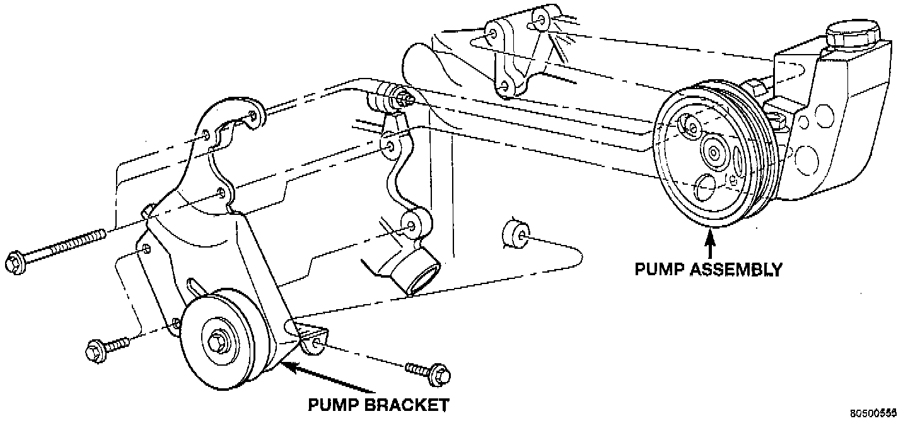

Power Steering Pump Removal and Installation

REMOVAL
1. Remove serpentine drive belt.
2. Vehicles equipped with Speed Proportional Steering, disconnect actuator harness.
3. Remove pressure and return hoses from pump and drain pump.
4. Remove 3 pump mounting bolts through pulley access holes.
5. Loosen the 3 pump bracket bolts.
6. Tilt pump downward and remove from engine.
7. Remove pulley from pump.
INSTALLATION
1. Install pulley on pump.
2. Install pump on engine.
3. Tighten pump bracket bolts to 47 Nm (35 ft. lbs.).
4. Install 3 pump mounting bolts and tighten to 27 Nm (20 ft. lbs.).
5. Install the pressure and return hoses to pump.
6. Vehicles equipped with Speed Pro Steering, connect actuator harness.
7. Install drive belt.
8. Add power steering fluid. Refer to Power Steering Pump Initial Operation.